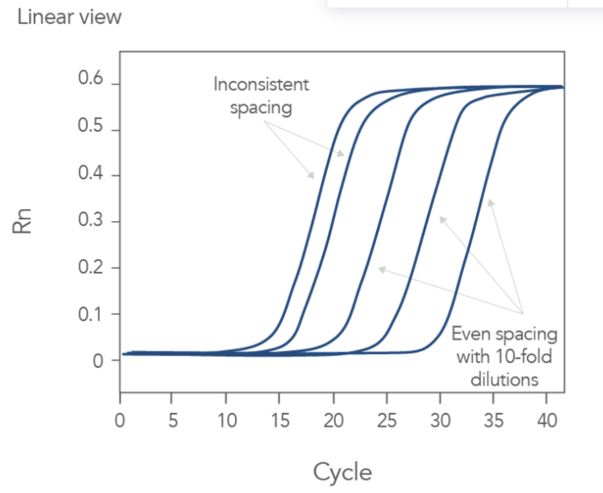

Common Mistakes in qPCR and Corrective Steps
Question 7: The comparisons between these samples are irreproducible

Potential Causes:
- The efficiency of the amplification is below 88% in one or both of the samples
- There is degradation of RNA
- The differences in efficiency are now more than 5%
- The dilutions are inaccurate
- The concentrations measrued are low
Select all corrective steps (3):